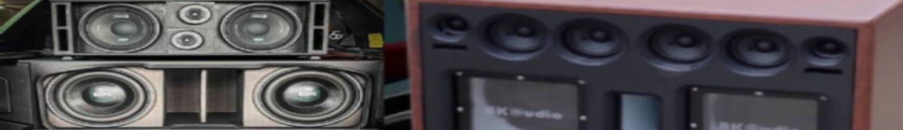

ตู้ลำโพงบลูทูธ
ตู้ปิด (SEALED ENCLOSURE)
ตู้ลำโพงประเภทนี้มีลักษณะปิดทึบ สามารถเก็บอากาศ และควบคุมการเคลื่อนที่ของกรวยลำโพงซับวูเฟอร์ได้ดีกว่าตู้ลำโพงประเภทอื่น นอกจากนี้ ยังให้เสียงเบสส์ที่ลึก มีความหนักแน่น เป็นตู้ที่เหมาะกับลำโพงซับวูเฟอร์ที่มีโครงสร้างกรวยแข็งแรง ขอบเซอร์ราวน์ดมีความทนทาน แม่เหล็กมีขนาดใหญ่ เป็นตู้ที่ออกแบบง่าย ให้การตอบสนองความถี่ต่ำได้รวดเร็ว และต้องการกำลังวัตต์จากเพาเวอร์แอมพ์มากกว่าตู้เปิด
ตู้เปิด (VENTED ENCLOSURE)
มีลักษณะคล้ายกับตู้ปิด แต่มีท่อ (PORTED) ทำหน้าที่ระบายคลื่นเสียงเบสส์ที่อยู่ภายในตู้ไปเสริมกับคลื่นเสียงที่อยู่ด้านหน้ากรวยลำโพง โดยมีท่อระบายเสียงไปช่วยเพิ่มความดังเสียงให้มากขึ้นถึง 3 ดีบี เมื่อเทียบกับตู้ปิด ซึ่งคลื่นเสียงที่ออกมาจากท่อจะต้องสัมพันธ์กับคลื่นเสียงด้านหน้าลำโพง จุดสำคัญอยู่ที่ ท่อระบายเสียง ถ้าออกแบบไม่ถูกต้องจะทำให้เสียงเบสส์คลาดเคลื่อน เกิดความเพี้ยน ดังนั้นจะต้องเลือกขนาดท่อ (เส้นผ่าศูนย์กลาง และความยาวท่อ) ตามที่โรงงานกำหนด
อ้างอิง : https://www.autoinfo.co.th/article/106358/